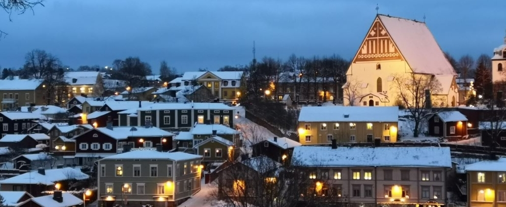
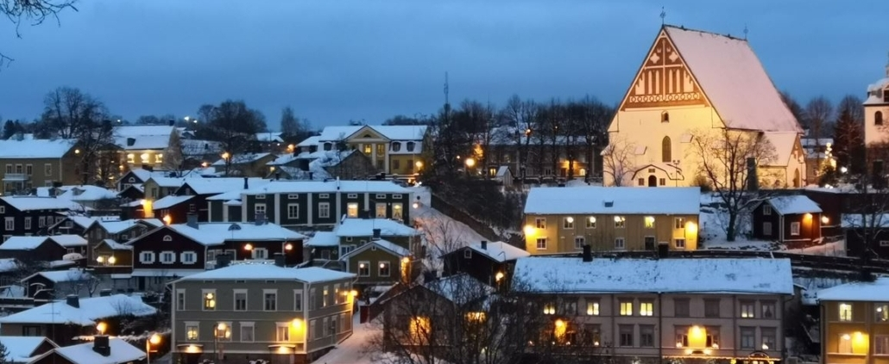

Fun-Facts
Land of a thousand lakes – Finland has over 188,000 lakes, giving it one of the most water-rich landscapes in the world.
Midnight Sun – in the summer, the sun doesn’t set above the Arctic Circle, creating magical 24-hour daylight.
Aurora Borealis – Lapland is one of the best places on Earth to see the Northern Lights dancing across the sky.
 
